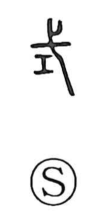

式

Uncategorized
Kun: | On: shiki
rite ・ style ・ standard
Explanation
式 combines 弋, the corded bird‑snaring arrow that also functioned as a ritual implement, with a sacred tool held in the left hand by a shaman to guard the holy and drive out impurity. Together they portray the act of expelling malign forces and restoring proper order. From this image the character comes to mean a model or rule—what one conforms to and takes as the standard. Related graphs preserve this exorcistic core: 拭 describes wiping away defilement with these implements; 試 depicts purification by spoken incantation in prayer; and 弑 shows dispelling an animal’s curse‑spirit until it perishes.